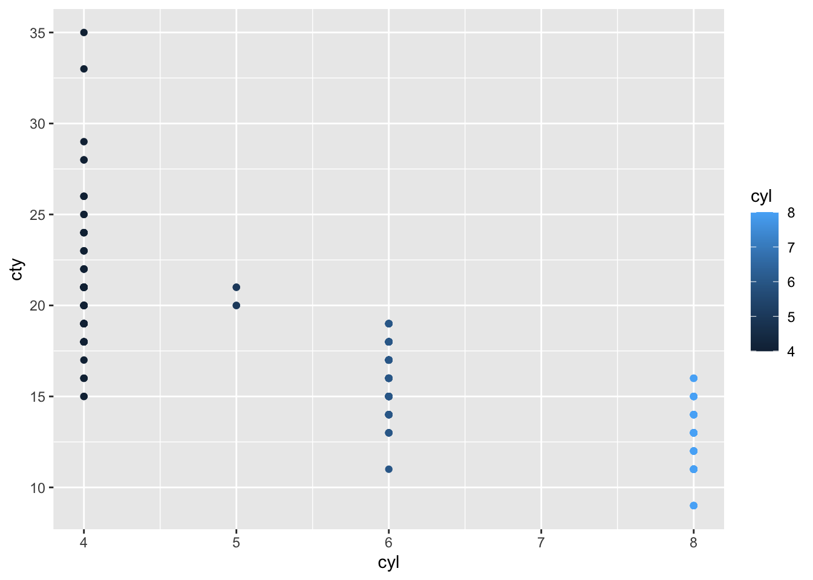
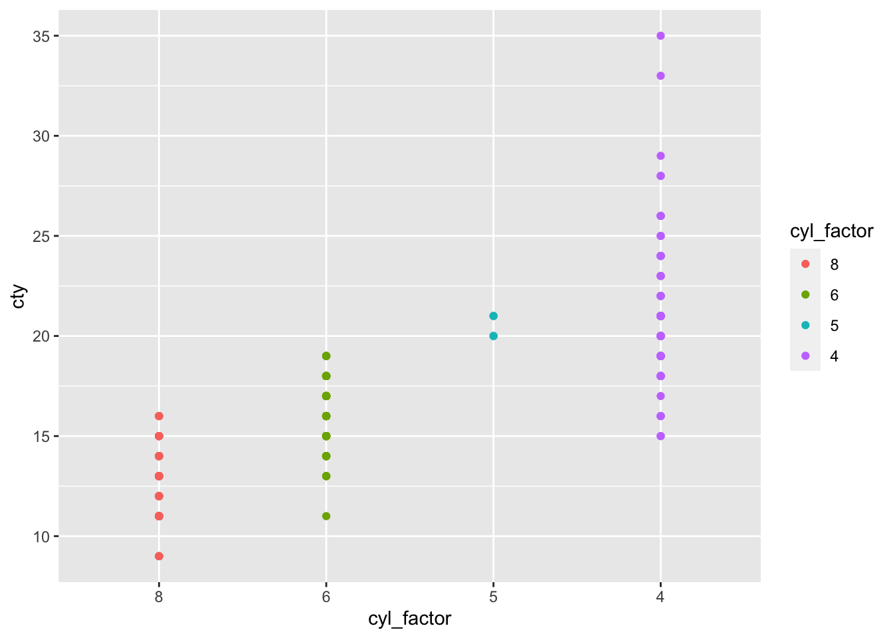
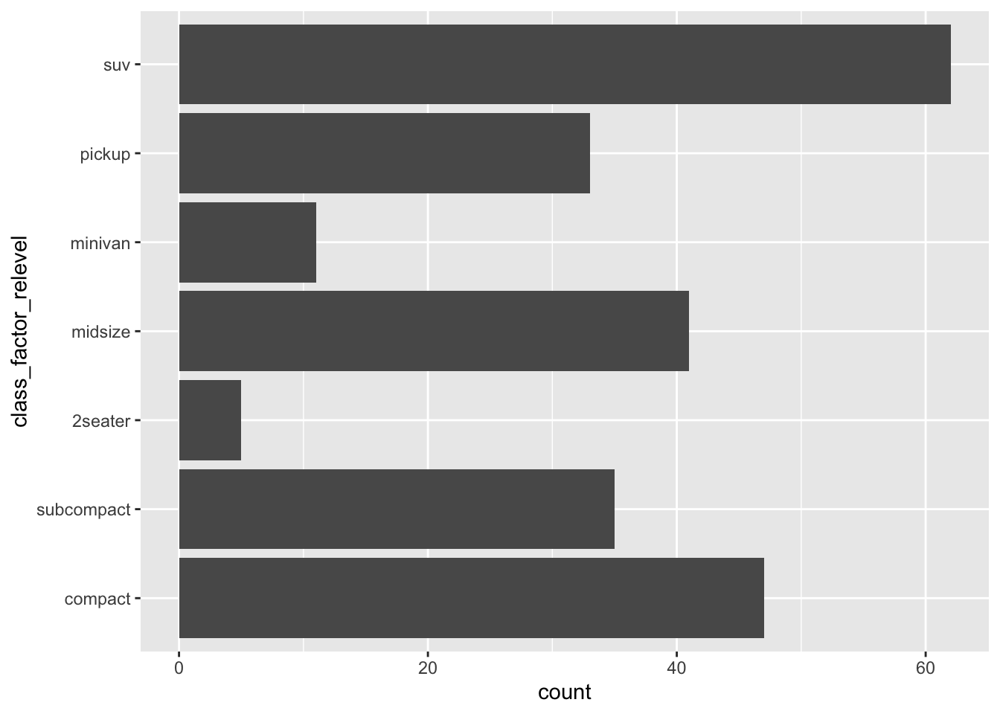
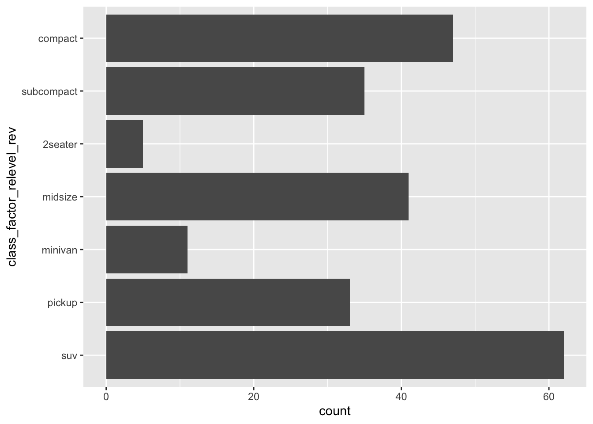
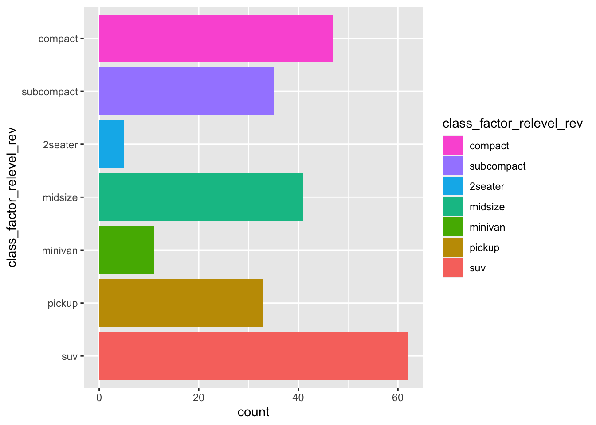
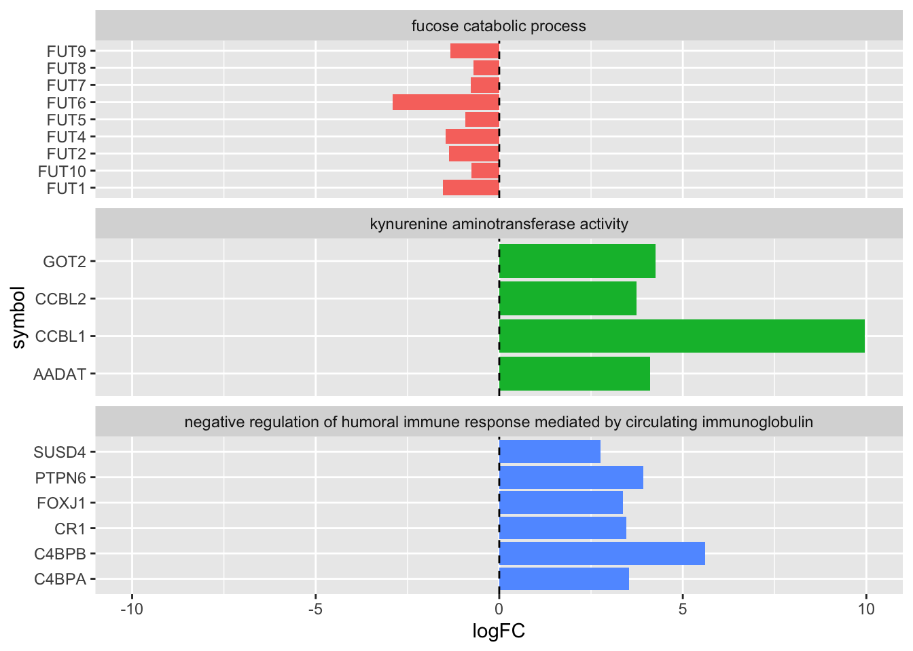
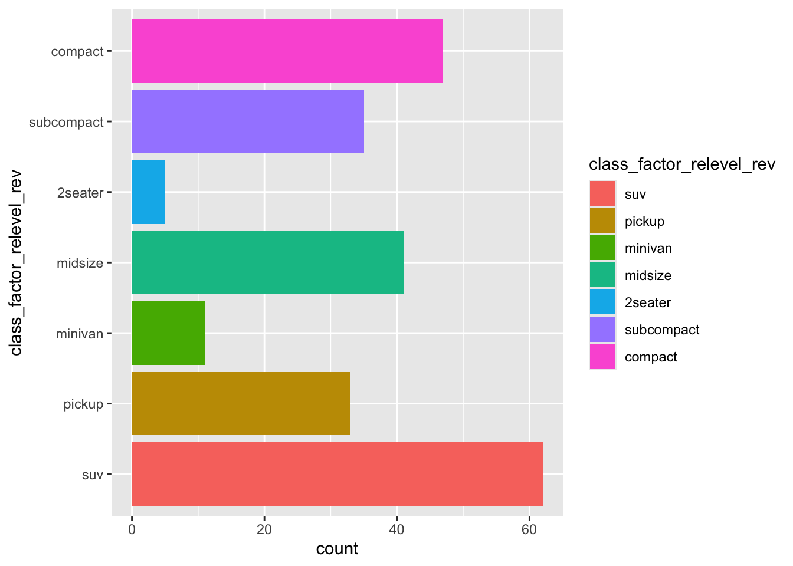
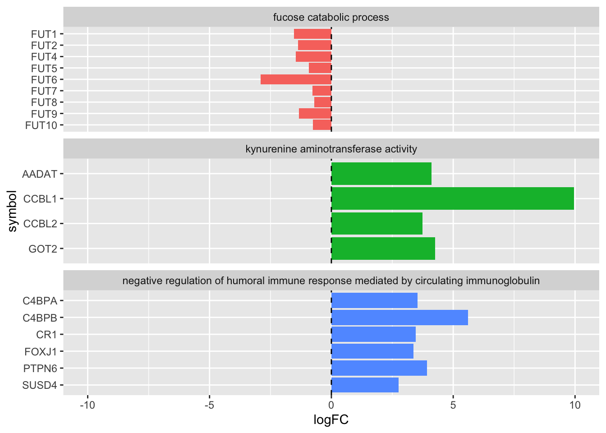

8 What the factor?
Sooner or later in your R learning journey you will come face to face with factors. Factors are something I prefer to shield beginners from, but there’s no avoiding this element of R. Understanding how to handle factors is often the key to in travelling the ‘last mile’ to make your plots exactly the way you want them. Factors can also be extremely important for correctly setting up statistical models, although we will not cover that here.
So what are factors? Essentially they are ordered labels for data values.
Consider the numbers 1 to 3. In elementary school, grade 1 is lower than grade 3. In the context of a running race however, place 1 is higher/better than place 3.
We intuitively use different ‘ordering labels’ in our heads for the same numbers, according to these two contexts.
Another example is the flow of seasons throughout the calendar year. In the northern hemisphere the seasons follow Winter > Spring > Summer > Autumn. In the southern hemisphere the seasons flow Summer > Autumn > Winter > Spring. Spring should sit at position 2 in the Canadian context, and position 4 in the Australian context.
In R we give ordered labels to data values by creating factors. To see what happens to a column of data when it is converted to a factor, we use the str() command, which stands for ‘data structure’.
Let’s load the tidyverse and mutate the number of engine cylinders in the mpg data into factor.
## # A tibble: 234 × 12
## manufacturer model displ year cyl trans drv cty hwy fl class cyl_factor
## <chr> <chr> <dbl> <int> <int> <chr> <chr> <int> <int> <chr> <chr> <fct>
## 1 audi a4 1.8 1999 4 auto(l5) f 18 29 p compa… 4
## 2 audi a4 1.8 1999 4 manual(m5) f 21 29 p compa… 4
## 3 audi a4 2 2008 4 manual(m6) f 20 31 p compa… 4
## 4 audi a4 2 2008 4 auto(av) f 21 30 p compa… 4
## 5 audi a4 2.8 1999 6 auto(l5) f 16 26 p compa… 6
## 6 audi a4 2.8 1999 6 manual(m5) f 18 26 p compa… 6
## 7 audi a4 3.1 2008 6 auto(av) f 18 27 p compa… 6
## 8 audi a4 quattro 1.8 1999 4 manual(m5) 4 18 26 p compa… 4
## 9 audi a4 quattro 1.8 1999 4 auto(l5) 4 16 25 p compa… 4
## 10 audi a4 quattro 2 2008 4 manual(m6) 4 20 28 p compa… 4
## # ℹ 224 more rowsNotice that the cyl_factor column now has the
We can get a summary view of the data types in each column (i.e., the ‘structure’ of the data) by piping the code output into str()
## tibble [234 × 12] (S3: tbl_df/tbl/data.frame)
## $ manufacturer: chr [1:234] "audi" "audi" "audi" "audi" ...
## $ model : chr [1:234] "a4" "a4" "a4" "a4" ...
## $ displ : num [1:234] 1.8 1.8 2 2 2.8 2.8 3.1 1.8 1.8 2 ...
## $ year : int [1:234] 1999 1999 2008 2008 1999 1999 2008 1999 1999 2008 ...
## $ cyl : int [1:234] 4 4 4 4 6 6 6 4 4 4 ...
## $ trans : chr [1:234] "auto(l5)" "manual(m5)" "manual(m6)" "auto(av)" ...
## $ drv : chr [1:234] "f" "f" "f" "f" ...
## $ cty : int [1:234] 18 21 20 21 16 18 18 18 16 20 ...
## $ hwy : int [1:234] 29 29 31 30 26 26 27 26 25 28 ...
## $ fl : chr [1:234] "p" "p" "p" "p" ...
## $ class : chr [1:234] "compact" "compact" "compact" "compact" ...
## $ cyl_factor : Factor w/ 4 levels "4","5","6","8": 1 1 1 1 3 3 3 1 1 1 ...Some more information is revealed about the newly created cyl_factor data. Specifically, it is a factor with 4 levels. The levels indicate the order of the unique values in the factor. For example, level 1 is the ‘4’ cyl category, level 2 is the ‘5’ cyl and so forth.
You will also notice the sequence of numbers after the levels: 1111333111. This indicates that the values in each of the first 10 rows are a mix of the level 1 (value = 4) and level 3 (value = 6) factor. Let’s verify this in the first 6 rows using head().
## # A tibble: 6 × 12
## manufacturer model displ year cyl trans drv cty hwy fl class cyl_factor
## <chr> <chr> <dbl> <int> <int> <chr> <chr> <int> <int> <chr> <chr> <fct>
## 1 audi a4 1.8 1999 4 auto(l5) f 18 29 p compact 4
## 2 audi a4 1.8 1999 4 manual(m5) f 21 29 p compact 4
## 3 audi a4 2 2008 4 manual(m6) f 20 31 p compact 4
## 4 audi a4 2 2008 4 auto(av) f 21 30 p compact 4
## 5 audi a4 2.8 1999 6 auto(l5) f 16 26 p compact 6
## 6 audi a4 2.8 1999 6 manual(m5) f 18 26 p compact 6Both the cyl and cyl_factor columns contain 4 4 4 4 6 6.
If we first arrange the mpg data frame by cyl, how does the data structure for cyl_factor change?
## tibble [234 × 12] (S3: tbl_df/tbl/data.frame)
## $ manufacturer: chr [1:234] "audi" "audi" "audi" "audi" ...
## $ model : chr [1:234] "a4" "a4" "a4" "a4" ...
## $ displ : num [1:234] 1.8 1.8 2 2 1.8 1.8 2 2 2.4 2.4 ...
## $ year : int [1:234] 1999 1999 2008 2008 1999 1999 2008 2008 1999 2008 ...
## $ cyl : int [1:234] 4 4 4 4 4 4 4 4 4 4 ...
## $ trans : chr [1:234] "auto(l5)" "manual(m5)" "manual(m6)" "auto(av)" ...
## $ drv : chr [1:234] "f" "f" "f" "f" ...
## $ cty : int [1:234] 18 21 20 21 18 16 20 19 19 22 ...
## $ hwy : int [1:234] 29 29 31 30 26 25 28 27 27 30 ...
## $ fl : chr [1:234] "p" "p" "p" "p" ...
## $ class : chr [1:234] "compact" "compact" "compact" "compact" ...
## $ cyl_factor : Factor w/ 4 levels "4","5","6","8": 1 1 1 1 1 1 1 1 1 1 ...The level order is the same, but note that the sequence of numbers for the first 10 rows now only contains the factor level 1 (corresponding to 4).
8.1 Factors in plots
The role of factors can be appreciated when making ggplots.
In general, controlling the order of appearance of axis values or facets, requires manipulating the factor levels in the input data frame column given to aes(), or facet_wrap( ~ ) respectively.
First let’s make a scatter plot of the number of engine cylinders (x axis) vs city mileage (y axis) for each car. Each point is also coloured by the number of cylinders in that car:

The colour scale is a dark-light gradient, which is appropriate because in the original mpg data frame, cyl contains numerical data. That is, the ascending number of cylinders are represented as progressively lighter colours.
But when the cylinders are converted to factors…
mpg %>% mutate(cyl_factor=factor(cyl)) %>%
ggplot(aes(x=cyl_factor, y=cty)) +
geom_point(aes(col=cyl_factor))
Now the colour scale is divergent, or discrete. This is because when cyl is a factor, the numbers 5,6,7,8 are simply treated as labels. They no longer have numerical meaning. We would see a similar plot if cyl was converted to character data using e.g. cyl_chr = as.character(cyl)
To illustrate this difference in data type, try summing the numbers 4 through 8 when encoded as numeric data, and factor data respectively:
## [1] 30## Error in Summary.factor(structure(1:5, levels = c("4", "5", "6", "7", : 'sum' not meaningful for factorsThe order of the labels (termed ‘factor levels’) can be controlled using the forcats library which is available in the tidyverse. All of the forcats functions begin with fct_. Here we will reorder the levels of cyl_factor using fct_relevel() and observe the result. This function takes the name of the factor column, followed by the desired order of its unique values (≈ ‘factor levels’).
mpg_cyl_relevel <- mpg %>%
mutate(cyl_factor=factor(cyl)) %>%
mutate(cyl_factor = fct_relevel( cyl_factor, '8','6','5','4'))
mpg_cyl_relevel %>% str()## tibble [234 × 12] (S3: tbl_df/tbl/data.frame)
## $ manufacturer: chr [1:234] "audi" "audi" "audi" "audi" ...
## $ model : chr [1:234] "a4" "a4" "a4" "a4" ...
## $ displ : num [1:234] 1.8 1.8 2 2 2.8 2.8 3.1 1.8 1.8 2 ...
## $ year : int [1:234] 1999 1999 2008 2008 1999 1999 2008 1999 1999 2008 ...
## $ cyl : int [1:234] 4 4 4 4 6 6 6 4 4 4 ...
## $ trans : chr [1:234] "auto(l5)" "manual(m5)" "manual(m6)" "auto(av)" ...
## $ drv : chr [1:234] "f" "f" "f" "f" ...
## $ cty : int [1:234] 18 21 20 21 16 18 18 18 16 20 ...
## $ hwy : int [1:234] 29 29 31 30 26 26 27 26 25 28 ...
## $ fl : chr [1:234] "p" "p" "p" "p" ...
## $ class : chr [1:234] "compact" "compact" "compact" "compact" ...
## $ cyl_factor : Factor w/ 4 levels "8","6","5","4": 4 4 4 4 2 2 2 4 4 4 ...Now ‘8’ will be level 1, ‘6’ will be level 2 etc. Importantly, we dont have to type out every unique value in the factor column. Those factor levels which are not specified will follow in a default order (alphabetical for character data; ascending for numerical data).
Now we plot the updated cyl_factor on the x axis:
 The numerical order of the x axis has been reversed because ‘8’ is level 1. Similarly, the data for 8 cylinder cars is now coloured red, which is the first of the default 4-colour scheme for ggplot.
8.1.1 Factors and facets
Factors are a useful way to control the order of facets as well. Say we want to plot the city vs highway mileage for each car, faceted by class. We want the compact and subcompact cars to appear next to each other in the facet order. We can create a class_factor column, and then assign these two car types to level 1 and 2 as follows:
mpg_class_factor <- mpg %>%
mutate(class_factor = factor(class)) %>%
mutate(class_factor = fct_relevel(class_factor, 'compact', 'subcompact'))
mpg_class_factor %>%
ggplot(aes(x=cty,y=hwy)) +
geom_point(aes(col=class_factor)) +
facet_wrap(~class_factor, scales='free')  The compact and subcompact facets now appear first, whereas they would usually be far apart due to their distance in alphabetical order.
8.1.2 Factors and bar charts
A special case where handling factors is particularly important is horizontal bar charts. These have the delightful quirk of inverting the alphabetical or numerical order of the y axis. If a simple reversal of the axis order is what you need, try adding the ggplot command scale_y_discrete(limits=rev). If you need something more bespoke, then changing the factor levels of the data represented on the y axis may be required.
To see the problem let’s make a simple horizontal bar chart counting the number of cars per class
The y order from top to bottom is descending alphabetical followed by the numerical ‘2seater’. Say we want to bring the compact and subcompact classes to the top of the y axis, followed by other the values in numerical, then alphabetical order.
This is a two-step problem. The simplest way to go about it is to
1) bring compact and subcompact cars to the front of the factor levels using fct_relevel() as above; then,
2) reverse the levels of the newly created factor levels using fct_rev().
mpg_class_relevel <- mpg %>%
mutate(class_factor= factor(class)) %>%
mutate(class_factor_relevel = fct_relevel(class_factor,'compact','subcompact'))
mpg_class_relevel %>% ggplot(aes(y=class_factor_relevel)) + geom_bar() The (sub-)compact classes now appear at the bottom of the y axis (indicating that they are the first two levels in the factor… I hope you’ve had a coffee recently!).
Next we reverse the levels of the factor, to bring our classes of interest to the top:
mpg_class_relevel_rev <- mpg_class_relevel %>%
mutate(class_factor_relevel_rev = fct_rev(class_factor_relevel))
mpg_class_relevel_rev %>% ggplot(aes(y=class_factor_relevel_rev)) + geom_bar() Done!
The last piece of this puzzle is to deal with the colour legend order.
mpg_class_relevel_rev %>%
ggplot(aes(y=class_factor_relevel_rev)) +
geom_bar(aes(fill=class_factor_relevel_rev)) R has helpfully reordered the y axis but not the colour legend. To handle this we will use a quick fix, which is to simply reverse the order of colour legend as part of the ggplot command.
Specifically this requires the guides() function, that can modify specific aspects of the plot appearance (independent of the contents of the input data frame). We will use this function to reverse the legend, which displays the values in the fill aesthetic given to geom_bar(). You can read more about guides here.
mpg_class_relevel_rev %>%
ggplot(aes(y=class_factor_relevel_rev)) +
geom_bar(aes(fill=class_factor_relevel_rev)) +
guides(fill = guide_legend( reverse=T ))
8.1.3 Reordering gene plots
The y axis order of the gene family bar chart that we created in week 3, can be improved using a similar approach.
First if complete_table is not currently in your R Environment, you could re-run the week 3 code to generate this data frame. Alternatively, download complete_table.tsv from this folder into your Desktop WEHI_tidyR_course/data_files folder, and import the table using read_tsv():
We left the plot at this stage:
complete_table %>%
ggplot(aes(x = logFC, y = symbol)) +
geom_col(aes(fill = DESCRIPTION), show.legend = FALSE) +
geom_vline(xintercept = 0, lty=2) +
facet_wrap(~DESCRIPTION, scales='free_y', ncol=1) +
xlim(-10,10) 
Note that the FUT genes in particular are not in numerical order on the y axis. To update the order let’s first create a vector of the FUT genes in the desired order. To do this we will take advantage of the paste() function from week 3. Also note there is no FUT3 gene in the data list.
Now we can create a new column of gene symbols in factor form, and relevel with the FUT_genes as the first factor levels. Remember that the remaining gene symbols will follow in alphabetical order.
complete_table_relvl <- complete_table %>%
mutate(sym_fct = factor(symbol)) %>%
mutate(sym_fct_relevel = fct_relevel(sym_fct, FUT_genes)) Use str() to check that fct_relevel has worked:
## tibble [19 × 3] (S3: tbl_df/tbl/data.frame)
## $ symbol : chr [1:19] "C4BPA" "C4BPB" "CR1" "FOXJ1" ...
## $ sym_fct : Factor w/ 19 levels "AADAT","C4BPA",..: 2 3 6 7 18 19 8 10 11 12 ...
## $ sym_fct_relevel: Factor w/ 19 levels "FUT1","FUT2",..: 11 12 15 16 18 19 1 2 3 4 ...So far so good, FUT1 and FUT2 are the first two levels.
Lastly we will use fct_rev() to reverse the sym_fct_relevel column which gets around the default inversion of the y axis for bar charts:
Now the gene symbols should appear in a sensible alphabetical and numeric order! As a final touch we also add a sensible label for the y axis.
complete_table_update %>%
ggplot(aes(x = logFC, y = sym_fct_rev)) +
geom_col(aes(fill = DESCRIPTION), show.legend = FALSE) +
geom_vline(xintercept = 0, lty=2) +
facet_wrap(~DESCRIPTION, scales='free_y', ncol=1) +
xlim(-10,10) +
ylab('symbol')
8.2 Summary
Handling factors in R can be hard work, but mastering factors will allow you to control nearly every aspect of ggplot, as well as clarifying they way that many base R functions and statistical operations work.
This chapter has provided the tools to overcome some common frustrating hurdles in ggplot. You can learn more about the uses and manipulation of factors in R for Data Science.
With even a basic understanding of factors under your belt, you are well on your way to mastering R.